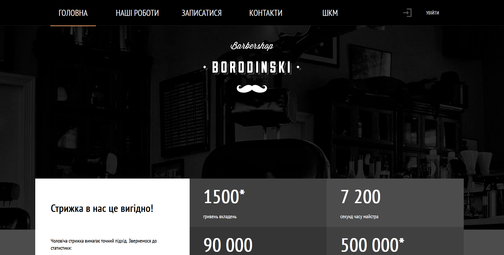
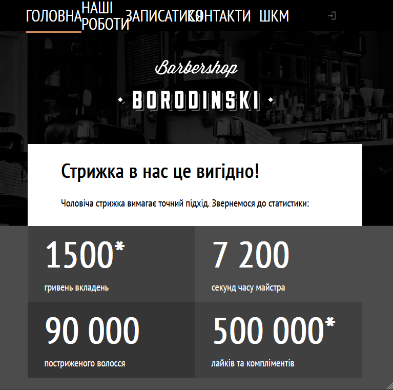
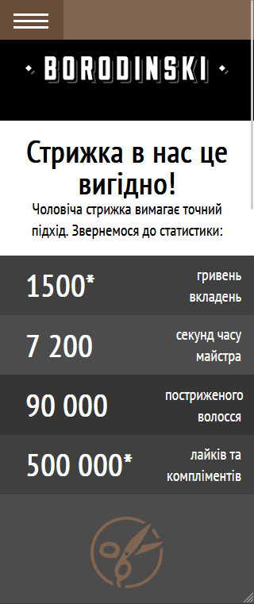

Тип проєкту: Навчальний кейс (веб-сайт для барбершопу).
Мета: Створення стильного, адаптивного сайту для запису клієнтів та демонстрації послуг.
У цьому проєкті я виступав у ролі Team Lead. Мої завдання виходили за межі простої верстки: я керував розподілом завдань між учасниками команди, контролював дотримання єдиного стилю коду та стежив за темпом виконання роботи. Я забезпечував технічну цілісність проєкту — від верстки окремих блоків до реалізації адаптивності, щоб сайт однаково добре виглядав як на широких екранах, так і на мобільних телефонах.
Сайт «BORODINSKI» — це сучасна візитівка барбершопу. Ми зробили акцент на зручній навігації та візуальній естетиці. Проєкт повністю адаптивний, включає інтерактивні елементи та структуровану подачу контенту, що дозволяє користувачу швидко знайти необхідну інформацію про послуги та майстрів.


